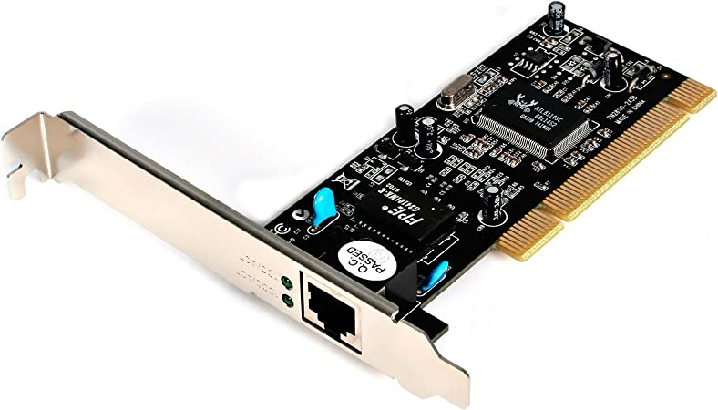
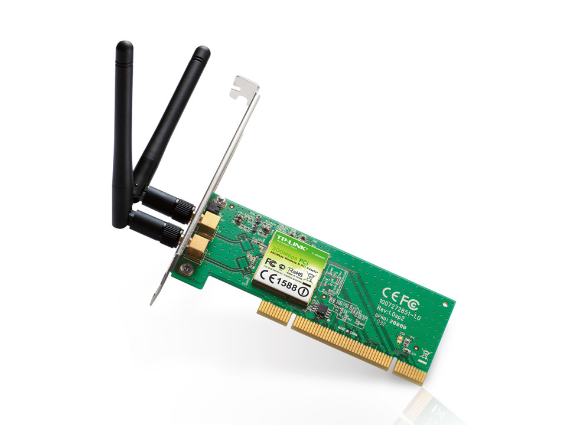
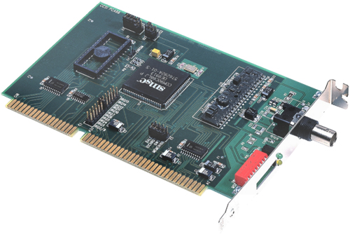
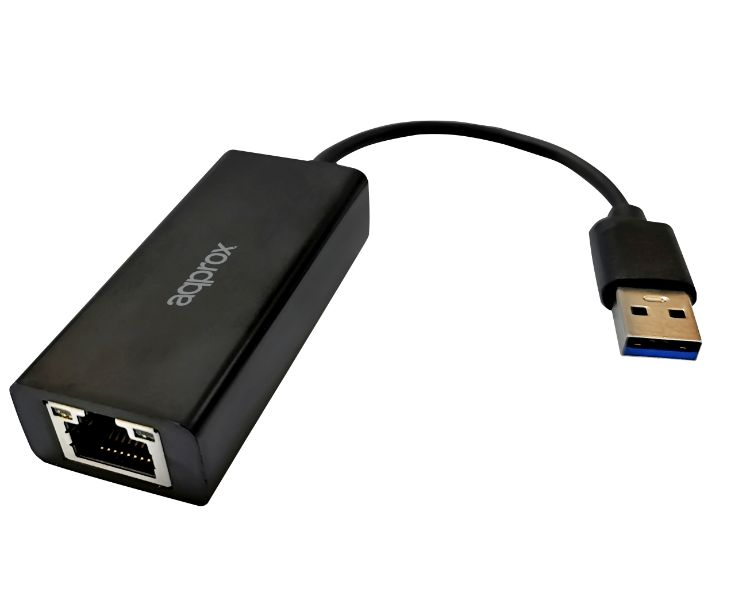

Tarjeta de Red
¿Que son las tarjetas de red?
Una tarjeta de red es un dispositivo que se instala en el interior de un ordenador para que este pueda conectarse a Internet. Según el tipo de tarjeta, esta puede incluir en su parte posterior un puerto para introducir el cable de Ethernet o admitir la conexión inalámbrica.
¿Qué utilidad tiene?
La tarjeta de red se encarga de la preparación, la transferencia y el control de los datos que se reciben y envían desde el ordenador a Internet o a otros equipos que comparten la misma red. Es importante mencionar que puede comunicarse también con periféricos como una impresora o un disco duro externo para agilizar el envío de datos importantes.
¿Qué tipos de tarjetas de red existen?

Ethernet
Estas tarjetas incluyen un puerto con el estándar 8P8C y el conector RJ45. Aquí, debes introducir el cable que proviene del router. En la actualidad, permiten conexiones BNC, AUI, MII y GMII.De red inalámbrica
Funcionan a través de wifi. Hay dos tipos. El primero es externo y se conecta a un BUS vacío y a la placa madre. El segundo viene integrado de fábrica. Debes comprobar el tipo de estándar para el que se diseñaron las tarjetas. El IEEE 802.11b alcanza más de 400 metros y funciona a 11 MB/s. El IEEE 802.11g tiene el mismo alcance y su velocidad es de 54 MB/s. Finalmente, el IEEE 802.11n presenta una velocidad de 800 MB/s y alcanza los 800 metros.


Token Ring
Dejaron de utilizarse, ya que costaban bastante más que las otras. Su conector era el DB-9, aunque se cambió por el RJ-45 en las MAU y las NIC.ARCNET
Sus siglas aluden a attached resource computer network. Se crearon en los años 80 y cayeron en desuso porque tenían una velocidad de conexión máxima muy baja en comparación con las Ethernet. Se conectan mediante un cable coaxial y se emplean en la industria para la automatización de procesos.

